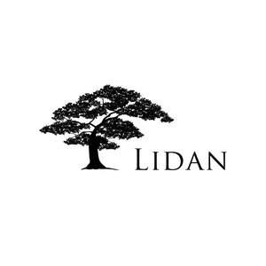
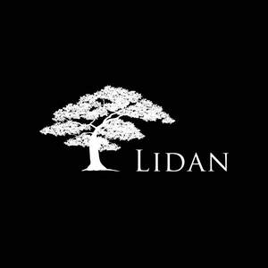
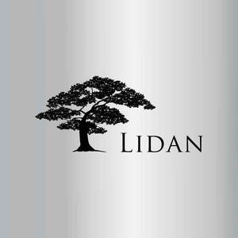

Trade Mark Journal No.2025/038 19 September 2025
UK00004238085 23 July 2025 (6,9,11,19,35,36,37,42)
Mark 1
Mark 2

Mark 3

Mark 4

Mark 5
- Class 6
- Common metals and their alloys; Building materials of metal; Steel; Steel rods; Steel beams; Frameworks of metal for building; Steel building materials; Modular metallic structures; Modular prefabricated steel framing; Modular building units (metal); Modular portable Building units of metal; Modular wall panelling of metal; Metal wall claddings.
- Class 9
- Solar cells; Solar panels; Solar modules; Solar panel arrays; Solar cell panels; Solar panels for energy generation.
- Class 11
- Solar heating installations; Solar energy powered heating installations.
- Class 19
- Building materials (non-metallic); Construction timber; Building panels, not of metal; Prefabricated houses (non-metallic); Modular homes (not of metal); Timber panels; Timber boarding; Structural timber; Construction timber; Worked timber; Manufactured timber; Building timber; Timber building boards; Civil engineering structures (Non-metallic -); Roofing (Non-metallic -); Roofing materials; Non-metal roofing; Roofing materials (Non-metallic-); Roofing tiles (Non-metallic-); Non-metal roofing tiles; Roofing boards (Non-metallic -); Roofing boards [of wood]; Non-metal roofing panels; Roofing, not of metal; Roofing tiles, not of metal; Roofing, not of metal, incorporating solar cells; Roofing boards (Non-metallic -) having insulating properties; Roofing, not of metal, incorporating photovoltaic cells; Modular log homes; Modular building units (Non-metallic); Modular homes, not of metal; Modular greenhouses, not of metal; Modular chicken houses, not of metal; Modular animal, not of metal; Space frame modular units, not of metal; Modular units (Non-metallic -) for constructing pre-fabricated buildings; Timber (Building -); Wooden buildings; Building timber; Timber building boards; Wood for building; Timber for building; Cladding sheets of wood, Cladding sheets (Non-metallic -); .
- Class 35
- Business management; Business administration; Office functions; Wholesale services in relation to construction equipment; .
- Class 36
- Building management.
- Class 37
- Building construction; Building construction supervision; Construction of buildings; Building repair; Building restoration; House building; Erection of pre-fabricated buildings; Construction works for pre-fabricated houses; Building services; Building and construction services; Carpentry services; Carpentry contractor services; General building contractor services; Roofing installation; Roofing services; Insulation of roofing; Installation of roofing; Installation of solar panels; Construction of utility solar panels; Building project management services; On site building management; On site project management relating to the construction of buildings; Building; Building construction; Building services; Building consultancy; Building repairs; Building restoration; Building insulating; Custom building construction; Supervision (Building construction -); Building of houses; Building construction services; Building consultancy services; Building of schools; Building refurbishment services; Refurbishment of buildings; Information services relating to the refurbishment of buildings; Building of commercial properties; Building of industrial properties; Construction of manufacturing and industrial buildings; Industrial construction; Commercial construction; Residential and commercial building construction; Civil engineering construction.
- Class 42
- Architectural services; Building design services; Design of interior decor; Design of buildings; Energy auditing; Environmental consultancy services; Urban planning; Advisory services relating to energy efficiency; Professional consultancy relating to energy efficiency in buildings; Structural engineering services; Structural engineering design services; Civil engineering; Civil engineering design services; Civil engineering planning services; Mechanical engineering services; Electrical engineering services; Architectural and engineering services; Architectural project management; Engineering project management services; Planning [design] of building extensions; House design; Design of industrial buildings; Architectural services for the design of industrial buildings.
Lidan Limited
Representative: RWK Goodman LLP